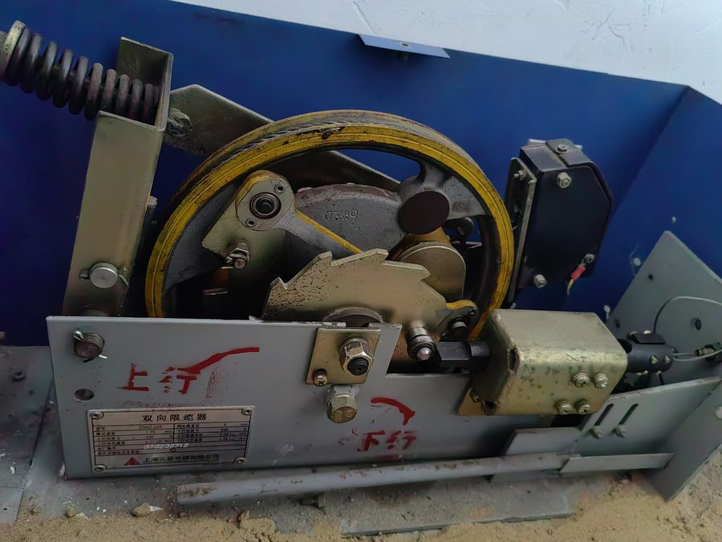

Classifier01
Defect screening is powered by a fine-tuned DINOv2 ViT-S/14 visual transformer running on Node 2. The network processes images as a whole-frame classification task rather than patch detection. Input frames are resized directly to 224×224 pixels without center cropping or edge clipping, ensuring that peripheral structural elements, fasteners, and bracket geometry remain visible within the receptive field.
To remove external preprocessing dependencies, input normalization and the final softmax layer are embedded in the exported model graph. This reduces runtime differences; agreement between backends is still checked separately.1
The system computes an overall anomaly score defined as Anomaly score = 1 − P(normal). If the anomaly score meets or exceeds the default threshold of 0.5 (configurable via anomaly_threshold), the frame is flagged as an anomaly, and the model evaluates the most probable defect category.
To prevent erratic classification when the network detects an irregular visual pattern but lacks strong class confidence, the system evaluates the top defect probability relative to the overall anomaly probability. If the top defect class accounts for less than 0.5 of the anomaly probability (confidence_threshold: 0.5), the prediction is categorized as "undetermined" rather than assigning a dubious defect label.
Eight classes02
The classifier categorizes hoistway conditions into eight operational classes covering standard elevator inspection criteria:
- Normal: components exhibiting expected mechanical configuration, clean surfaces, and correct clearances without visible distress.
- Spacing / engagement: improper mechanical gaps between guide shoes and rail blades, misaligned interlocks, or irregular gear mesh.
- Deformation, cracking, or aging: bent bracket flanges, structural metal fatigue cracks, or aged, brittle rubber vibration dampers.
- Missing or loose parts: absent bolts, loosened lock nuts, displaced retaining clips, or unseated guide clips.
- Oil sludge, dirt, or foreign objects: heavy accumulation of contaminated grease, fallen construction debris, or foreign obstructions in rail crevices.
- Rust: surface oxidation, pitting corrosion on brackets, or structural rust along hoistway steelwork.
- Wear: localized metal loss, grooving along rail friction faces, or scuffed guide liners.
- Wire rope damage: broken wire strands, crown wire abrasions, rope necking, or core protrusion.
| Class identifier | Visual description | Typical inspection focus |
|---|---|---|
| normal | Pristine or correctly maintained component | Guide rails, shoes, brackets |
| clearance_engagement | Incorrect mechanical spacing or misalignment | Guide shoe clearance, door sills |
| deformation_crack_aging | Plastic deformation, fatigue cracks, aging | Rail joints, mounting brackets |
| missing_loose_part | Fasteners missing or visibly backed out | Fishplate bolts, clip assemblies |
| oil_dirt | Sludge accumulation, debris, foreign matter | Rail base, pit equipment |
| rust_corrosion | Oxidation, surface scaling, pitting | Guide rail bases, bracket steel |
| wear | Friction loss, surface scoring, stepped wear | Rail working face, guide inserts |
| wire_rope_damage | Crown wire breaks, abrasion, rope deformation | Suspension ropes, governor ropes |

Samples · eight training photographs, resized to 900 px, watermarks removed; the caption keeps the source id. Labels printed on the equipment itself are part of the equipment, not site copy.
The gallery above shows one real training photograph per class, resized to 900 px and drawn from field maintenance archives. In the training copies, service watermarks, timestamps, and manual annotation circles were scrubbed so the transformer could not learn from them.
Metrics03
The training dataset consists of 223 human-reviewed photographs (103 verified normal components and 120 verified defect cases), supplemented by original service tickets containing timestamps and maintenance annotations. Normal samples were extracted from post-repair verification photographs in maintenance tickets and baseline hoistway surveys, ensuring authentic component backgrounds.
Evaluation was conducted using grouped 5-fold cross-validation. The grouping strategy strictly segregated near-duplicate images, before-and-after maintenance photograph pairs, and images captured during the same maintenance visit into the same fold, preventing cross-fold visual leakage.2
Validation using frozen DINOv2 ViT-S/14 features coupled to a linear evaluation head established the baseline performance:
- Normal versus anomaly detection achieved an AUROC of 0.93.
- Overall 8-class top-1 accuracy reached 0.64.
- Specific defect-type top-1 accuracy reached 0.59.
Given the modest size of the 223-image verified dataset, these performance metrics feature wide statistical error bounds. The fully fine-tuned end-to-end model is designed to match or exceed these linear probe benchmarks.
Running it04
The defect detection service dynamically selects the highest-performance inference backend available on Node 2, executing through three backends in strict priority order:
- RKNN: utilizes the dedicated hardware NPU of the Lubancat RK3588, executing an FP16 quantized model for maximum throughput and minimal CPU loading.
- ONNX Runtime: executes on CPU, configured by default to use 2 worker threads (
threads: 2) to ensure sufficient CPU capacity remains available for simultaneous stereo depth fusion. - OpenCV DNN: functions as an automated fallback engine, ensuring continuous operation even on lightweight hardware where specialized runtimes are absent.
During live video inspection from Cart B, the system applies exponential temporal smoothing with a weighting factor of 0.5 across consecutive frames, suppressing transient single-frame false alarms caused by lighting flicker or motion blur. For offline analysis, inspectors can upload static photos from a phone or laptop directly to /api/defects/detect_image. Single-photo uploads bypass temporal smoothing and execute immediate inference without requiring camera hardware to be connected.
Limits05
The visual classifier functions as a whole-frame image screener; it does not output bounding boxes or pixel masks to localize defects within the scene. An alert indicates that anomalous visual features exist within the frame, requiring the inspector to examine the physical component directly.
Furthermore, the model only recognizes the eight discrete classes present in its training distribution. Unusual structural anomalies, uncataloged electrical faults, or novel component designs will either be flagged as undetermined or missed entirely.
Most critically, negative classification does not constitute regulatory acceptance: the absence of a defect alarm cannot be used as legal proof of hoistway integrity. All screening outputs must be verified and signed off by a licensed human inspector.
Whole-frame classification flags suspicious hardware conditions to direct inspector focus but cannot substitute for certified hands-on examination.